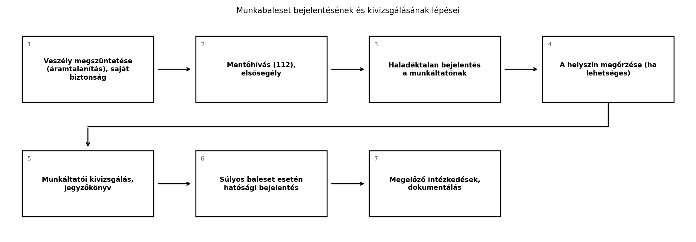

Képzeld el, hogy egy kis üzemben villamos karbantartóként dolgozol. A főnököd szóban arra utasít, hogy „csak pár percre” iktasd ki az áram-védőkapcsolót, mert a termelés áll, és a raktárban nincs idő a hiba megkeresésére. Mielőtt bármit tennél, tudnod kell, hogy jogaid és kötelezettségeid vannak, és hogy az olyan utasítást, amely a te életedet, egészségedet közvetlenül és súlyosan veszélyeztetné, megtagadhatod, ha pedig mások életét vagy testi épségét veszélyeztetné, a megtagadás kötelesség is lehet (ellenőrizendő: Mvt. és a Munka Törvénykönyve [Mt.] vonatkozó rendelkezései). A munkavédelem rendszere nem jogi magolás: ez az a védőháló, amely a mindennapi döntéseidben megóv attól, hogy baleset áldozata vagy okozója legyél.
Definíció. A munkavédelem az egészséget nem veszélyeztető és biztonságos munkavégzés feltételeinek megteremtését szolgáló szervezett tevékenység, amely a munkavállalókat fenyegető baleseti és egészségkárosodási kockázatok csökkentését célozza.
A gyakorlatban három részterületet különítünk el.
Definíció. A munkabiztonság a hirtelen, rendszerint balesettel járó veszélyekkel foglalkozik. Villanyszerelőként ide tartozik az áramütés, a leesés, a zárlatból keletkező fényív, a forgó gépalkatrész, a vágott kéz, a kábeldob elgurulása vagy a szerszám leesése.
Definíció. A munkaegészségügy a hosszabb idő alatt kialakuló egészségkárosodásokkal foglalkozik: por, vegyi anyag, zaj, rossz testhelyzet, vibráció vagy pszichés terhelés. Például a poros szerelőtérben tartós munkavégzés légzőszervi panaszokhoz, a hosszú éveken át tartó térdeplés térdízületi panaszokhoz vezethet.
Definíció. Az ergonómia a munkahely, a szerszám, a munkafolyamat és az emberi adottságok összehangolásával csökkenti a terhelést. Villamos kapcsolószekrény szerelésekor ilyen kérdés, hogy a gyakran csatlakozókat szerelő dolgozó elérje a kapcsokat, megfelelő legyen a világítás, a csavarbehajtón ne kelljen túlzott erőt kifejteni, és a nehéz szerelvényeket ne egyedül kelljen mozgatni.
A gyakorlatban a három terület átfedi egymást: egy rosszul kialakított munkaasztal miatt kialakuló kényszertesthelyzet egyszerre munkabiztonsági, egészségügyi és ergonómiai probléma.
A munkavédelmi szabályok nem egyetlen dokumentumban vannak, hanem több rétegben. A villanyszerelő munkáját is ez a rétegződés szabályozza.
A legfelső réteg a jogszabály. A munkavédelem alapvető hazai jogszabálya az 1993. évi XCIII. törvény (munkavédelmi törvény, rövidítve Mvt.). A törvény keretjelleggel meghatározza a munkáltató és a munkavállaló jogait, kötelezettségeit, a hatósági ellenőrzés rendszerét, az oktatás, az alkalmassági vizsgálat és a balesetek kivizsgálásának fő szabályait. A törvényhez végrehajtási rendeletek kapcsolódnak, például egyes munkavédelmi határértékekről, eszközökről vagy ágazati részletszabályokról. A jogszabályokat mindenki köteles betartani, megszegésük hatósági, szabálysértési vagy büntetőjogi következménnyel járhat.
A második réteg a szabvány. A szabvány jellemzően műszaki megoldást, vizsgálati módszert, méretet vagy határértéket rögzít. A hazai és európai jelölések: MSZ, illetve MSZ EN, MSZ HD. A szabvány önmagában általában önkéntes, de a gyakorlatban két esetben válik kötelezővé:
A gyártó a termék megfelelőségét gyakran harmonizált szabvánnyal igazolja (megfelelőségi vélelem). Ez nem teszi a szabványt a szerelő számára kötelezővé; ilyenkor a szerelőre a gyártói szerelési és használati utasítás betartása kötelező (ellenőrizendő: termékbiztonsági jogszabályok).
Szabvány. A munkavédelmi és villamos biztonsági gyakorlatban az MSZ HD 60364 sorozat, az MSZ EN 61439, az MSZ EN 60529, az MSZ EN 60204-1 vagy az MSZ EN 60898-1 a mindennapos példa. A szabvány pontos szakasz- és táblázatszámát, valamint az éppen hatályos kiadását mindig ellenőrizni kell a munkavégzés előtt, mert a szabványok időben változnak. (ellenőrizendő: hatályos szabványkatalógus)
A harmadik réteg a belső szabályzat, más néven helyi szabályzat vagy munkahelyi utasítás. Ezt a munkáltató adja ki, és a saját munkahelyére igazítja a jogszabályi és szabványi követelményeket. Ide tartozik a munkavédelmi szabályzat, a technológiai utasítás, a karbantartási utasítás, a kockázatértékelésből következő egyedi előírás vagy a munkaengedélyezési rend.
A rétegek közötti viszonyt a munkán egy kérdés teszi kézzelfoghatóvá: hol keresem a választ? Az alábbi táblázat a villanyszerelő leggyakoribb kérdéseihez rendeli hozzá a dokumentumot, annak szintjét és a könyv alfejezetét. Felülről lefelé olvasva az is látszik, hogy egy munkán egyszerre több réteg érvényes.
| Kérdés a munkán | Hol a válasz? | Szint | A könyvben |
|---|---|---|---|
| Hogyan teszem feszültségmentessé a berendezést? | MSZ EN 50110-1 és MSZ 1585 (üzemeltetési szabványok) | szabvány, jogszabályi hivatkozással kötelező (ellenőrizendő: a hivatkozó rendelet és a hatályos kiadás) | Villamos munkavégzés biztonsága: az öt szabály és a munkaengedély |
| Milyen védelem, keresztmetszet, kioldási idő kell? | MSZ HD 60364 sorozat (létesítési szabvány) | szabvány (ellenőrizendő: hatályos kiadás) | Automatikus lekapcsolás: TN és TT, kioldási feltétel |
| Hogyan csatlakozom a közcélú hálózatra, milyen mérőhely kell? | az elosztói engedélyes csatlakozási feltételei | szerződéses, engedélyesi előírás (ellenőrizendő: az adott engedélyes aktuális szabályzata) | Csatlakozás a közcélú hálózathoz, mérőhely |
| Tűzoltó készülék, tűzvédelmi főkapcsoló, kábelátvezetés tűzgátlása? | Országos Tűzvédelmi Szabályzat (OTSZ, rendelet) | jogszabály (ellenőrizendő: hatályos OTSZ) | Kockázatértékelés, védőeszközök, balesetek és tűzvédelem |
| Ki végezhet villamos munkát, ki a felelős? | Mvt. + az üzemeltetési szabvány személyi kategóriái + munkáltatói kijelölés | jogszabály, szabvány és belső szabályzat együtt (ellenőrizendő) | Villamos munkavégzés biztonsága: az öt szabály és a munkaengedély |
| Hogyan szerelem a készüléket, mekkora a meghúzási nyomaték? | a gyártó szerelési utasítása | a termékhez kötelező | Kötések, sorkapcsok, csavarnyomaték és ellenőrzés |
| Milyen védőeszközt kell itt viselnem? | munkáltatói kockázatértékelés, egyéni védőeszköz-juttatási rend | belső szabályzat | Kockázatértékelés, védőeszközök, balesetek és tűzvédelem |
| Mikor és hogyan kell ellenőrizni, felülvizsgálni? | MSZ HD 60364-6 + a felülvizsgálatot előíró rendelet | szabvány és jogszabály (ellenőrizendő: a hatályos rendelet és a ciklusidők) | Jegyzőkönyv, szabványossági felülvizsgálat és hibakeresés |
Ha két szint ellentmondani látszik egymásnak, a szigorúbb biztonsági követelményt alkalmazd, és kérdezz: a belső szabályzat konkretizálhat és szigoríthat, de a jogszabálynál és a kötelezővé tett szabványnál enyhébb nem lehet.
Továbbvitt eredmény. A jog–szabvány–szabályzat hierarchia: a jogszabály a kötelező minimum; a szabvány akkor válik kötelezővé, ha jogszabály hivatkozik rá, vagy ha a munkáltató kötelezővé teszi; a belső szabályzat konkretizálhat, és lehet szigorúbb, de enyhébb nem lehet. Ezt a rétegzést használjuk a Kockázatértékelés, védőeszközök, balesetek és tűzvédelem alfejezetben, amikor a kockázatértékelés dokumentációját és a védőeszköz-kiválasztást tanuljuk.
A munkavédelmi törvény nem úgy működik, mint egy katalógus, amelyben minden munkaműveletre külön előírás van. Néhány alapelv mentén szabályoz, és ezekből kell a mindennapi szituációkat levezetni.
Szabály. A munkáltató a felelős az egészséget nem veszélyeztető és biztonságos munkavégzés feltételeinek megteremtéséért. Ez az úgynevezett munkáltatói felelősség elve. A munkavállaló mulasztása sem mentesíti a munkáltatót attól, hogy a szükséges védelmi intézkedéseket meghozza.
Szabály. A megelőzés elsődlegessége azt jelenti, hogy a veszélyt elsősorban a forrásánál kell megszüntetni, nem elegendő a munkavállalót ellátni védőeszközzel. Például a vezetékeket feszültségmentesítéssel kell biztonságossá tenni, nem elegendő kesztyűben, feszültség alatt dolgozni.
Szabály. A munkakörülményeket az emberhez kell igazítani, nem az embert a munkakörülményekhez. Ezt fejezi ki az ergonómia is: a munkaeszközt, a munkateret, a munkaszervezést úgy kell kialakítani, hogy a munkavállaló ne károsodjon.
Szabály. A munkavállalókat be kell vonni a biztonságot érintő döntésekbe, és tájékoztatni kell őket a kockázatokról, a védelmi intézkedésekről, a munkavédelmi képviselőjükről. A munkavállalói jogok és a munkáltatói kötelezettségek együtt alkotnak zárt rendszert.
A törvény mindkét oldalra kötelezettségeket telepít, nem csak a munkáltatóra.
A munkáltató legfontosabb kötelezettségei:
A munkavállaló legfontosabb kötelezettségei:
Látható, hogy a munkavállaló nem passzív alanya a védelemnek: ő is felelős a saját és a környezete biztonságáért.
A villanyszerelő gyakran építkezésen, más szakmákkal egy időben, sokszor alvállalkozóként dolgozik: ugyanabban a helyiségben állványoznak, köszörülnek, vakolnak. Ilyenkor több munkáltató felel a saját embereiért, de a veszélyek egymást érik: a más csapat okozta veszély téged is elér, és a te munkád is veszélyeztethet másokat (például ha visszakapcsolsz egy kört, amelyen más dolgozik). Szabály. Több munkáltató egyidejű munkájánál a munkavégzést össze kell hangolni: ki, mikor, hol dolgozik, ki kapcsolhat, hol vannak a lekapcsolási pontok (ellenőrizendő: Mvt. közös munkavégzésre és az építési munkahelyekre vonatkozó rendelkezései). Ha egy másik csapat munkája téged veszélyeztet (például a kábeleid felett köszörülnek), szakítsd meg a munkát, menj biztonságos helyre, és jelezd a közvetlen vezetődnek és a munkát összehangoló személynek. Szóbeli megállapodás nem pótolja a zárolást: a te körödön a saját lakatod legyen.
| Szereplő | Feladata | Mikor fordulsz hozzá? |
|---|---|---|
| Munkavédelmi képviselő | a munkavállalók választott képviselője, a biztonságot érintő ügyekben egyeztet | ha a jelzésedre a munkáltató nem intézkedik, vagy tanácsra van szükséged |
| Munkavédelmi szakember | a munkáltató megbízásából kockázatértékelés, oktatás, baleseti kivizsgálás | hiányzó oktatás, védőeszköz, új veszély, baleset |
| Munkát irányító vezető, fővállalkozó; építkezésen a biztonsági és egészségvédelmi koordinátor | ütemezés, az egyidejű munkák összehangolása | más csapat munkája zavar vagy veszélyeztet, lekapcsolás egyeztetése |
| Munkavédelmi hatóság | ellenőrzés, súlyos balesetek bejelentése, panaszok | ha a munkahelyen belül nem oldódik meg a súlyos probléma |
A munkavédelmi ismereteket nem elég egyszer elolvasni. A munkáltatónak munkavédelmi oktatást kell tartania, és azt dokumentálnia kell. Az oktatás jellemzően ezekre terjed ki:
Az oktatást a munkavállaló aláírásával igazolja. A formális aláírás azonban nem elegendő: ha a munkavállaló nem érti, kérdeznie kell, a munkáltatónak pedig biztosítania kell, hogy a tudás a gyakorlatban is meglegyen.
A munkaköri alkalmassági vizsgálat célja annak orvosi megítélése, hogy a dolgozó az adott munkakört egészségkárosodás nélkül, illetve mások veszélyeztetése nélkül képes-e ellátni. Villanyszerelői munkakörben ez különösen fontos, mert a munka magasban, feszültség közelében, kapcsolószekrényben, gyakran egyedül vagy felelősen történik. Az alkalmassági vizsgálat lehet előzetes, időszakos és soron kívüli.
Megjegyzés. A konkrét oktatási gyakoriság, az alkalmassági vizsgálat rendje, a bejelentési határidők és a baleseti kivizsgálási kötelezettségek a hatályos Mvt.-ből és végrehajtási rendeleteiből olvashatók ki. Ebben a tananyagban a szabályok szerkezetét tanuljuk, nem a hatályos paragrafusokat. (ellenőrizendő: hatályos jogszabályszöveg)
Definíció. A munkabaleset olyan baleset, amely a szervezett munkavégzés során vagy annak következtében következik be. A baleset jellemzője a hirtelen fellépő külső hatás, ellentétben a foglalkozási megbetegedéssel, amely hosszabb expozíció következménye.
A baleset bekövetkeztekor a munkát azonnal meg kell szakítani, ha a helyzet további veszélyt jelent. Első a veszély megszüntetése (áramtalanítás) és a sérült ellátása, majd a baleset bejelentése. Áramütésnél a sérültet csak az áramkör lekapcsolása (vagy szigetelt eszközzel való leválasztása) után szabad megérinteni, mert a mentő is áramütést szenvedhet; az elsősegély részleteit Az áram élettani hatásai és az elsősegélynyújtás alfejezet tárgyalja. A gyakorlatban a sorrend így alakul:

A balesetet a sérült, illetve aki észlelte, haladéktalanul jelenti a munkáltatónak. A munkáltató köteles a balesetet kivizsgálni, és arról jegyzőkönyvet felvenni. A súlyos baleseteket a munkavédelmi hatóságnak be kell jelenteni. A kivizsgálás célja nem a bűnbakkeresés, hanem az okok feltárása és a hasonló esetek megelőzése.
Hiba. Súlyos jogi hiba a balesetet „házon belül” intézni, a sérültet lebeszélni a bejelentésről, vagy a jegyzőkönyvet úgy felvenni, hogy az okot elhallgatja. Ez a munkáltatót és a munkavállalót is súlyosabb helyzetbe sodorhatja, mint maga az eredeti baleset.
Az alábbi lap nem hivatalos nyomtatvány, hanem a belső eseménybejelentés tartalmi mintája; a hivatalos baleseti jegyzőkönyvet a munkáltató veszi fel, formáját jogszabály határozza meg (ellenőrizendő: hatályos rendelet és űrlap). A jobb oldali oszlopban a Villamos munkavégzés biztonsága: az öt szabály és a munkaengedély alfejezet majdnem-baleseti esete van kitöltve; a dátum, a berendezés és a szereplők jelölése példaadat. Üres lap: Nyomtatható jegyzőkönyvek és sablonok, D4.
| Rovat | Kitöltött példa |
|---|---|
| 1. Esemény típusa (baleset, majdnem-baleset, veszélyes helyzet) | majdnem-baleset |
| 2. Dátum, idő | 2026. 11. 12., 10:40 |
| 3. Helyszín (épület, helyiség, berendezés) | szivattyúház, a szivattyúmotor kapcsolószekrénye (KSZ-1), főkapcsoló |
| 4. Érintett személy(ek) | A. szerelő (a szekrényben dolgozott), B. karbantartó (visszakapcsolt) |
| 5. Tanúk | munkavezető (a lekapcsolást ő végezte) |
| 6. Az esemény leírása (tények) | A munkavezető a főkapcsolót lekapcsolta, lakatot és táblát nem tett fel. A mágneskapcsoló cseréje közben B. a leállásjelzés után visszakapcsolta a főkapcsolót. A. a kezét éppen kivette, a csavarhúzó a kapcson maradt, a kapocs feszültség alá került. |
| 7. Sérülés, ellátás (elsősegély, 112, orvos) | nincs sérülés |
| 8. Azonnali intézkedés | főkapcsoló lekapcsolva, lakatolva, a munka leállítva, a vezető értesítve |
| 9. Feltételezett ok (személyi, tárgyi, szervezési) | szervezési: a visszakapcsolás elleni biztosítás (LOTO) elmaradt, a karbantartó nem tudott a munkáról |
| 10. Javasolt megelőző intézkedés | személyes lakatok és táblák biztosítása, LOTO-oktatás, munkakezdés bejelentése a karbantartásnak |
| 11. Bejelentő és átvevő aláírása, dátum | … |
Tipikus hiba. A leírásban vélemény áll tény helyett („B. figyelmetlen volt”). Írd azt, ami látható és ellenőrizhető: ki, mit, mikor csinált, mi hiányzott; az okok mérlegelése a kivizsgálás feladata.
A munkavédelmi törvény egyik legfontosabb munkavállalói joga, hogy a dolgozó megtagadhatja az olyan utasítást, amelynek végrehajtása az ő vagy más életét, egészségét vagy testi épségét közvetlenül és súlyosan veszélyezteti.
Szabály. Ha az utasítás végrehajtása a saját életedet, egészségedet közvetlenül és súlyosan veszélyeztetné, megtagadhatod (jog); ha másokét veszélyeztetné (pl. a védelem kiiktatása a későbbi kezelőket veszélyezteti), akkor köteles is vagy megtagadni (ellenőrizendő: Mvt. és Mt. vonatkozó rendelkezései). Ha a veszély megszűnik, a munka elvégzése alól nem mentesül, de a veszélyes időszakban a megtagadás jogos. A megtagadás miatt a munkavállalót hátrány nem érheti.
Figyelem. Ez a jog nem általános engedetlenségi jog. A munkavállaló nem tagadhatja meg a munkát pusztán azért, mert az kényelmetlen, nehéz vagy kockázattal járó, de a munkáltató az előírt védelmi intézkedéseket maradéktalanul betartotta. A megtagadás akkor jogos, ha közvetlen és súlyos veszély áll fenn.
A gyakorlatban ilyen például, ha a villanyszerelőt arra utasítják, hogy jogosultság nélkül, feszültség alatt dolgozzon egy 400 V-os elosztóban, vagy hogy kösse ki a védővezetőt, mert az zavarja a mérést. Biztonsági korlát. Hálózati feszültségű (230/400 V) munkát csak jogosult, arra képesített személy végezhet; a tanuló ilyen munkát önállóan nem gyakorolhat.
A felelősség oldala: aki a szabályokat megszegi, felelősséggel tartozik. A munkavállaló részéről felmerülhet fegyelmi felelősség, kártérítési felelősség, súlyosabb esetben szabálysértési vagy büntetőjogi felelősség. A munkáltató oldalán a munkavédelmi hatóság munkavédelmi bírságot szabhat ki, szabálysértési vagy büntetőjogi eljárás indulhat, és a polgári jogi kárfelelősség is megjelenik.
Egy szerelő egy munkahelyi elosztószekrényben hibakeresést végzett. A termelési vezető utasította, hogy az éjszakai műszak alatt hidalja át (iktassa ki) az áram-védőkapcsolót, mert a termelés nem állhat le. A szerelő jelezte, hogy a védelmi eszköz kikötése áramütés elleni védelmet szüntet meg, és ezt az utasítást megtagadja. Felhívta a figyelmet arra, hogy a kockázatértékelés szerint a területen csak feszültségmentesítés után lehet dolgozni, és a hiba felderítéséhez a gépet le kell állítani.
A szerelő nem kapott hátrányos intézkedést, mert a megtagadás jogszerű volt, a munkáltató pedig vizsgálatot indított a vezető utasításával kapcsolatban. Ez az eset azt mutatja, hogy a munkavédelmi szabályok nem papíron élnek: a szerelő akkor tudta megvédeni magát és a későbbi kezelőket, ha ismerte a jogait.
Hiba 1. A dolgozó azt hiszi, hogy a szabvány mindig kötelező. Valójában a szabvány önkéntes, kivéve, ha jogszabály vagy belső szabályzat kötelezővé teszi. Helyes gyakorlat: ellenőrizni, hogy az adott munkahelyi szabályzat és a jogszabály hivatkozik-e rá.
Hiba 2. A munkavállaló aláírja a munkavédelmi oktatási jegyzőkönyvet anélkül, hogy megértené a tartalmát. Helyes gyakorlat: kérdezni, visszakérdezni, és csak a valóban megértett tartalom után dokumentálni.
Hiba 3. A munkavállaló nem meri megtagadni a veszélyes utasítást, mert fél a főnöktől. Helyes gyakorlat: a megtagadás jogszerű, és a munkáltatónak kötelessége kivizsgálni a helyzetet.
Hiba 4. A balesetet nem jelentik, mert „kis sérülés”, de később kiderül, hogy súlyosabb. Helyes gyakorlat: minden balesetet, sérülést, közel balesetet a helyi szabályzat szerint haladéktalanul jelenteni, mert a kivizsgálás megelőzheti a súlyosabb eseményt.
Gyakorlás: ennek az alfejezetnek a kidolgozott példái, gyakorlatai és megoldással ellátott feladatai az Összefoglaló feladatgyűjtemény villanyszerelő tanulóknak című kötet 2.1 szakaszában találhatók.
A munkavédelem a biztonságos munkavégzés rendszere; három területe a munkabiztonság, a munkaegészségügy és az ergonómia. A hazai alapot az 1993. évi XCIII. törvény adja. A normarendszer rétegei: törvény, végrehajtási rendelet, szabvány és belső szabályzat. A szabvány önkéntes, de jogszabályi hivatkozás vagy munkáltatói kötelezés esetén kötelezővé válik; a belső szabályzat lehet szigorúbb, de enyhébb nem. A munkáltató felelős a feltételek megteremtéséért, a munkavállaló pedig köteles az utasításokat megtartani, védőeszközt használni és veszélyt jelenteni. A munkavállaló jogosult megtagadni a közvetlen és súlyos veszélyt jelentő utasítást; emiatt hátrány nem érheti. A baleseteket a munkáltató vizsgálja ki, súlyos esetben hatósági bejelentés is szükséges. A jogszabály–szabvány–belső szabályzat hierarchia a későbbi kockázatértékelési, védőeszköz- és tűzvédelmi fejezetek alapja.